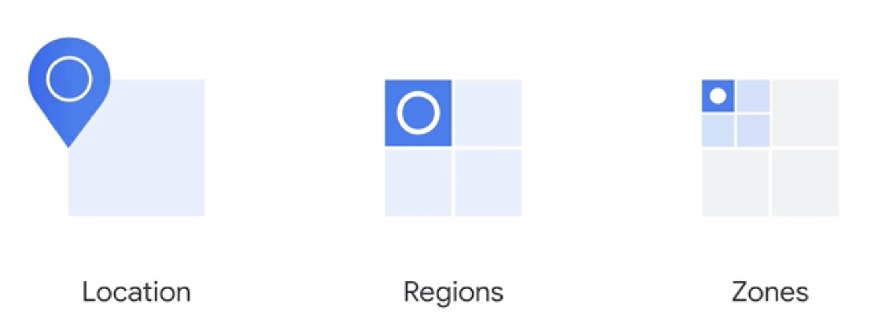
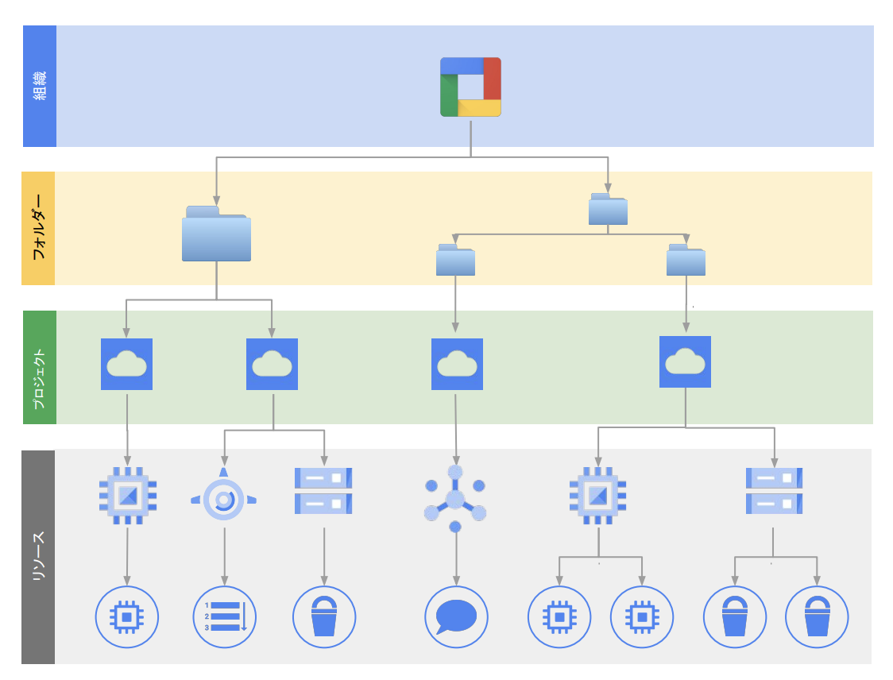

GCPについて¶
GCPは、Googleが提供するクラウドコンピューティングプラットフォーム。 GCPを使うことで、Google社内で使われているものと同じテクノロジーやサービスを利用することができる。
GCPはAWS同様柔軟性や拡張性、高速なインフラをクラウドから利用できる特徴があるとともに、データ分析やAIという分野において強みがある。
ドキュメント¶
インフラ¶
GCPでは、ゾーン（Zone）がインフラストラクチャの最小単位で、1つのゾーンは通常1つのデータセンターまたはその一部を指す。 複数のゾーンが集まってリージョン（Region）を構成し、リージョンは同一地理的エリア内で低レイテンシ通信が可能。 複数のリージョンをまとめた概念をロケーション（Location）と呼ぶことがあるが、これはより論理的な分類（例：US、EU、ASIAなどのマルチリージョン）。
 Google Cloud Fundamentals: Core Infrastructure 日本語版
階層 |
単位 |
説明 |
例 |
|---|---|---|---|
ロケーション |
Location |
複数リージョンを論理的にまとめた地理的分類 |
us, eu, asia（BigQuery などで使用） |
リージョン |
Region |
複数のゾーンを持つエリア。地理的に近接したゾーンで構成される |
asia-northeast1（東京）、us-central1 |
ゾーン |
Zone |
物理的なデータセンター。1リージョン内に複数あり、可用性分散に利用 |
asia-northeast1-a, us-central1-c |
GCPでは約40のリージョンと121のゾーンが提供されている。
構成と権限¶
構成¶
GCPにおけるリソースの階層構造は以下の通りで、組織、フォルダ、プロジェクト、リソースで構成される。 組織、フォルダー、プロジェクトにポリシーを設定することで、下位改装に対してポリシーを継承することができる。 また、リソースは必ず、一つのPJに所属する。
 まずは知っておくべき IAM の基礎と最新の便利機能
階層 |
要素 |
説明 |
主な用途・備考 |
|---|---|---|---|
🏢 1 |
組織（Organization） |
GCP全体の最上位階層。ドメイン（例：example.com）に紐づく1つの組織。 |
大企業・法人向け。すべてのリソースの親。 |
📁 2 |
フォルダ（Folder） |
プロジェクトをグルーピングする中間階層。部門単位、環境（dev/stg/prd）単位などで利用。 |
IAMやポリシーの継承に使える。多階層可。 |
📦 3 |
プロジェクト（Project） |
実際のGCPサービスを利用するための基本単位。課金、IAM、API有効化などすべてここで行う。 |
GCPリソースはすべてプロジェクトに属する。 |
🔧 4 |
リソース（Resource） |
VM、Cloud Storage、Pub/Subなどの個別サービス。実体となるコンピューティングやストレージ。 |
すべてのリソースは1つのプロジェクトに属する。 |
プロジェクトを作成すると、以下のプロジェクトID・プロジェクト番号・プロジェクト名が決まる。 それぞれの役割は以下。
項目 |
説明 |
変更可否 |
ユニーク性 |
誰が指定するか |
用途・備考 |
|---|---|---|---|---|---|
プロジェクトID (projectId) |
GCP上で一意の文字列ID。ユーザーが一度指定（自動候補あり）し、以後変更不可。API・CLIでよく使われる。 |
❌変更不可 |
✅一意 |
ユーザーが指定（自動候補あり） |
多くのAPIでこのIDを使ってプロジェクトを指定 |
プロジェクト番号 (projectNumber) |
GCPが自動的に発行する内部的に一意な数値ID。IAMや課金設定で利用されることがある。 |
❌変更不可 |
✅一意 |
GCPが自動で発行 |
通常は意識されないが、一部APIやログで使われる |
プロジェクト名 (name) |
表示用の名称。一意である必要はなく、いつでも変更可能。UIでの識別に使われる。 |
✅変更可 |
❌重複可 |
ユーザーが自由に設定 |
管理コンソールなどの画面に表示されるラベル的な存在 |
リソース・ユーザーの管理¶
リソースやユーザーの管理にはIAM（Identity and Access Management）を利用する。
IAMを利用することで、誰が、どういう操作を、何に対して、どういう条件でを制御することができる。
詳細は、別ページにまとめる。
Google Cloud APIs¶
Google Cloud APIsは、GCPが提供するAPI群が定義されている。
Google Cloud APIsは、gRPCをベースにして設計されている。
gRPCは、googleが開発したProtocol Buffersをベースとした、軽量・高速なRPC(Remote Procedure Call)フレームワークであり、通信の効率性と型安全性を重視した設計となっている。
Protobuf(Protocol Buffers)¶
ProtobufはGoogleが開発したデータ定義のフレームワークであり、「APIで利用するデータ構造」と「そのインターフェース（RPC）」を宣言的に定義するフォーマット。
このフォーマットの最大の特徴は、単なるデータ形式（例：JSONやYAML）の代替ではなく、定義されたスキーマ（.protoファイル）がなければ開発を始められないという点。
つまり、スキーマが仕様書であり、かつコードの出発点でもあるため、ドキュメント管理と開発実装が一体化されている。
まず、APIのインターフェースを宣言的に定義しているという特徴は、具体的に.protoファイルの例をみると理解しやすい。
syntax = "proto3";
service UserService {
rpc GetUser(GetUserRequest) returns (User);
}
message GetUserRequest {
string user_id = 1;
}
message User {
string name = 1;
int32 age = 2;
}
上記の.protoにより、関数名・引数・戻り値などのAPI定義、データ構造について明確かつ機械可読に定義されている。
どんなAPIがあるか → GetUserというRPCがある
どんなリクエストを送るか → user_idを送る
どんなレスポンスが返るか → nameとageが入ったUser構造が返る
Protobufで定義されたスキーマがなければ開発を始められないという特徴は、gRPCがそのスキーマからStubコードを自動生成し、それを基にAPI実装やクライアント開発を行う設計になっていることに起因する。 この仕組みの詳細は、後述のgRPCセクションで解説する。
最後にRESTと比較すると、一層Protobufの特徴である、APIを定義したドキュメントをベースに開発が始まる点が理解しやすい。
項目 |
REST（+Swagger/OpenAPI） |
gRPC（+Protobuf） |
|---|---|---|
APIの定義 |
任意（後からでもOK） |
必須（ないと通信できない） |
定義の役割 |
人が読むためのドキュメント |
コード生成・通信の契約 |
実装との関係 |
実装とズレがち |
実装も定義から生成される |
RPC¶
RPC(Remote Procedure Call)とは、離れた場所（リモート）にある関数を、ローカルの関数のように呼び出す仕組み。 通信処理の実装を抽象化し、開発者はシンプルな関数呼び出しの形でAPIを利用できる。
gRPC¶
Googleが開発したRPC通信フレームワークであり、Protobufで定義されたAPI仕様に基づいて、Stubコードを自動生成して双方向通信を行う。
開発者は .proto ファイルでサービスとメッセージの定義を行い、それをコンパイルして得られるStubコードを使ってAPIを呼び出す。 .protoファイルを protoc コマンドでコンパイルすると、次のようなStubファイルが生成される。使用言語（Python、Go、Javaなど）に応じたコードを自動生成できる。）
ファイル名 |
内容 |
|---|---|
user_pb2.py |
メッセージ構造（User, GetUserRequest）などを定義 |
user_pb2_grpc.py |
gRPCのクライアント/サーバーStubコードを定義 |
gRPCのAPIの開発においては、この生成されたファイルをimportして、開発を行う。すなわち、.protoファイルが前提となって開発が始まる。 以下は、生成されたStubファイルをPythonでimportして使うことで UserService に対して GetUser を呼び出す例：
import grpc
from user_pb2 import GetUserRequest
from user_pb2_grpc import UserServiceStub
channel = grpc.insecure_channel('localhost:50051')
stub = UserServiceStub(channel)
response = stub.GetUser(GetUserRequest(user_id="123"))
print(response.name)
このコードでは、stub.GetUser(...) が関数呼び出しのように見えるが、実際には gRPC を通じてネットワーク越しのリモートAPIを呼び出している。
Google Cloud SDKにおける gRPC と REST の切り替え¶
Google Cloud SDK のクライアントライブラリには、主に2種類のAPI層が存在しており、開発者は transport オプションを指定することで、gRPC通信かREST通信かを選択することができる。
レイヤー |
概要 |
例 |
|---|---|---|
1. High-level Client (手軽API) |
REST/gRPC両対応。独自の使いやすいラッパー |
pubsub_v1.PublisherClient |
2. Low-level gRPC Client |
Protobuf/gRPCベースの生のStub |
publisher_pb2_grpc.PublisherServiceStub |
.proto ファイルに以下のような記述を追加することで、gRPCのメソッドをRESTエンドポイントとしても利用可能になる。この仕組みは gRPC Transcoding と呼ばれる。
rpc GetUser(GetUserRequest) returns (User) {
option (google.api.http) = {
get: "/v1/users/{user_id}"
};
}
このように、同じAPIメソッドに対して gRPC でも REST でもアクセスできるようになっているため、Google Cloudのクライアントライブラリでは、通信方式（transport）を明示的に選択できる
通信方法 |
呼び出し例 |
|---|---|
gRPC |
stub.GetUser(request) |
REST |
GET /v1/users/123 |
Google Cloudのクライアントライブラリでは、transportの方式を明示的に選択することができる：
from google.cloud import pubsub_v1
# gRPCベース
client = pubsub_v1.PublisherClient(transport="grpc")
# RESTベース（内部的にはHTTP/1.1 + JSON）
client_rest = pubsub_v1.PublisherClient(transport="rest")
デフォルトはサービスによって異なるが、性能重視ならgRPC、環境制約やデバッグ性重視ならRESTを選択することが多い。